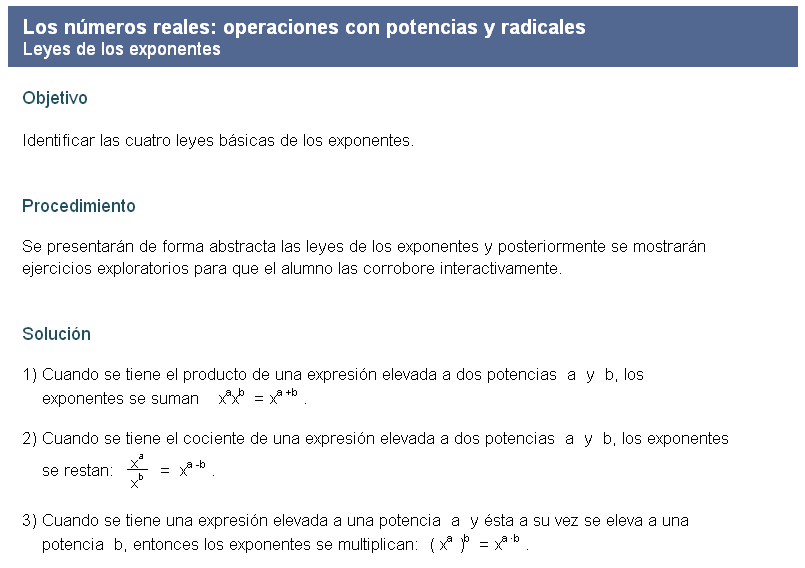
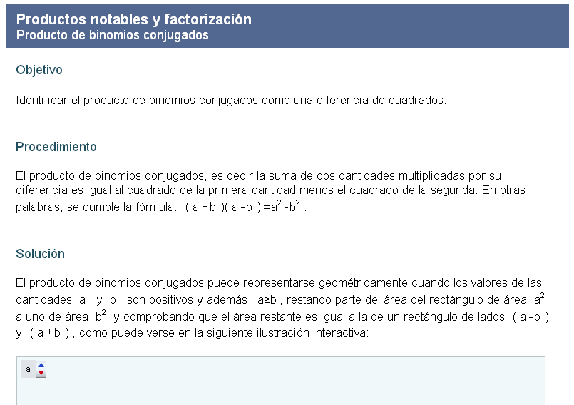

Discursos de Descartes para 1o de Bachillerato


|
Discursos de Descartes para 1o de Bachillerato |
|
|
que implemente el Canvas de HTML5, como por ejemplo: Google Chrome, Mozila Firefox o Safari |
|
AD_ODA3_01 |
Números naturales
Orden en los números naturales y su representación en la recta numérica. Operaciones básicas con números naturales. Algoritmo de Euclides (mínimo común múltiplo y máximo común divisor) parte uno. Algoritmo de Euclides (mínimo común múltiplo y máximo común divisor) parte dos. Área: Matemáticas, Aritmética, Algebra elemental Nivel: Bachillerato |
|
AD_ODA3_02
|
Orden y representación de los números enteros
Localizar los números enteros en la recta numérica. Distinguir entre dos números enteros cuál es mayor. Comparación de números enteros mediante su representación gráfica. Área: Matemáticas, Aritmética, Algebra elemental Nivel: Bachillerato |
|
|
AD_ODA3_03 |
Operaciones básicas con números enteros
Sumas, restas, productos, divisiones, problemas de aplicación, operaciones combinadas, prioridad de las operaciones y signos de agrupación. Área: Matemáticas, Aritmética, Algebra elemental Nivel: Bachillerato |
|
|
AD_ODA3_04 |
Orden y representación de los números racionales
Localizar números racionales en la recta numérica en forma de fracción y en forma decimal. Distinguir cuál de dos números racionales es mayor. Comparar números racionales mediante su representación gráfica. Área: Matemáticas, Aritmética, Algebra elemental Nivel: Bachillerato |
|
|
AD_ODA3_05 |
Operaciones básicas con números racionales
Sumas, restas, multiplicaciones, divisiones, solución de problemas, operaciones combinadas, prioridad de las operaciones y signos de agrupación. Área: Matemáticas, Aritmética, Algebra elemental Nivel: Bachillerato |
|
|
AD_ODA3_06 |
Significado y representación de los números racionales
Representar números racionales como fracciones comunes, porcentajes y decimales. Fracciones equivalentes. Problemas que involucran porcentajes. Representación de números decimales mediante fracciones. Área: Matemáticas, Aritmética, Algebra elemental Nivel: Bachillerato |
|
|
AD_ODA3_07 |
Los números irracionales
Ubicación de un número irracional entre dos racionales. Números irracionales como expansiones decimales infinitas y no periódicas. Área: Matemáticas, Aritmética, Algebra elemental Nivel: Bachillerato |
|
|
AD_ODA3_08 |
Los números reales: orden y jerarquía de las operaciones
Distinguir cual de dos números reales es mayor. Realizar operaciones combinadas con números reales. Prioridad de las operaciones y signos de agrupación. Área: Matemáticas, Aritmética, Algebra elemental Nivel: Bachillerato |
|
|
AD_ODA3_09  |
Leyes de los exponentes
Identificar las cuatro leyes de los exponentes y utilizarlas para simplificar operaciones aritméticas y algebraicas. Área: Matemáticas, Aritmética, Algebra elemental Nivel: Bachillerato |
|
|
AD_ODA3_10 |
Las potencias y su significado
Conversión entre potencias fraccionarias y radicales. Identificación de inversos de una potencia como la misma potencia con el exponente negativo. Área: Matemáticas, Aritmética, Algebra elemental Nivel: Bachillerato |
|
|
AD_ODA3_11 |
Operaciones con potencias y radicales
Realización de operaciones combinadas que incluyen potencias con y sin racionalización. Área: Matemáticas, Aritmética, Algebra elemental Nivel: Bachillerato |
|
|
AD_ODA3_12 |
Resolución de ecuaciones lineales básicas (primera parte)
Ecuaciones lineales del tipo A x = B, con A y B enteros y con A y B racionales. Ecuaciones lineales del tipo A x + B = C con A, B y C enteros y con A, B y C racionales. Ecuaciones lineales del tipo A (x + B) = C (x + D) con A, B, C y D enteros. Área: Matemáticas, Aritmética, Algebra elemental Nivel: Bachillerato |
|
|
AD_ODA3_13 |
Resolución de ecuaciones lineales básicas (segunda parte)
Ecuaciones lineales del tipo A (x + B) = C (x + D) con A, B, C y D racionales. Ecuaciones lineales del tipo (x + B)^2 = (x + C)(x + D) con B, C y D enteros y con B, C y D racionales. Ecuaciones lineales del tipo (x + A) / (x + B) = (x + C) / (x + D). Área: Matemáticas, Aritmética, Algebra elemental Nivel: Bachillerato |
|
|
AD_ODA3_14 |
Problemas que dan lugar a ecuaciones lineales con una incógnita
Seleccionar la ecuación lineal que permite resolver un problema. Solución de problemas mediante ecuaciones lineales. Área: Matemáticas, Aritmética, Algebra elemental Nivel: Bachillerato |
|
|
AD_ODA3_15 |
Sistemas de ecuaciones lineales de 2 x 2
Resolución de sistemas de ecuaciones lineales con dos incógnitas con los métodos de suma - resta, sustitución e igualación. Gráficas de sistemas de ecuaciones lineales. Interpretación de la solución de un sistema de ecuaciones como el punto de intersección de dos rectas. Solución de problemas mediante sistemas de ecuaciones lineales de 2 x 2. Área: Matemáticas, Aritmética, Algebra elemental Nivel: Bachillerato |
|
|
AD_ODA3_18  |
Producto y factorización (segunda parte)
Identificación del producto de binomios conjugados como una diferencia de cuadrados. Identificación de una diferencia de cuadrados como el producto de un binomio conjugado. Factorización de una suma de cubos y factorización de una diferencia de cubos. Área: Matemáticas, Aritmética, Algebra elemental Nivel: Bachillerato |
|
|
AD_ODA3_19 |
Resolución de ecuaciones cuadráticas (primera parte)
Solución de ecuaciones cuadráticas de los tipos Ax^2 + C = 0, Ax^2 + C = D, Ax^2 + Bx = 0, A (x + M)^2 = N y (Ax + B)(Cx + D) = 0. Área: Matemáticas, Aritmética, Algebra elemental Nivel: Bachillerato |
|
|
AD_ODA3_20 |
Resolución de ecuaciones cuadráticas (segunda parte)
Solución de ecuaciones de segundo grado por factorización, completando el trinomio cuadrado perfecto y con la fórmula general. Análisis del discriminante, identificación de la ecuación cuadrática que resuelve un problema dado y solución de problemas mediante una ecuación cuadrática. Área: Matemáticas, Aritmética, Algebra elemental Nivel: Bachillerato |
|
que implemente el Canvas de HTML5, como por ejemplo: Google Chrome, Mozila Firefox o Safari |